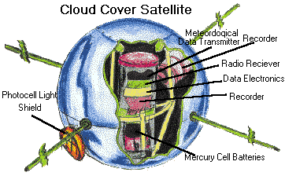

Certain satellites are important for scientific research. These satellites gather data for scientific analysis. This includes observations of the atmosphere of our planet, the stars, the sun and other parts of space. Demeis states that earth orbiting satellites can observe celestial objects without the interference from the Earth's atmosphere. These satellites are able to record data without the interference of gases, lights, and magnetic fields produced on earth. Scientific satellites are not restricted to earth orbits, they also orbit the sun, moon, and other planets.
